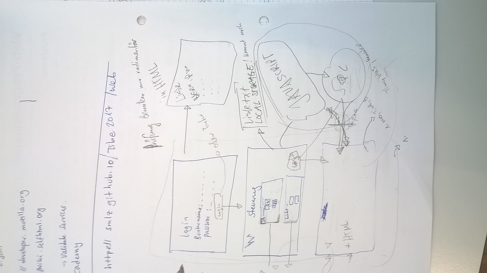

Website mit drei Seiten:
Workshop UX Design in der Gruppe durchgeführt und auf zwei Design Varianten geeinigt.
Beispiel einfache Variante:
Bilder einfügenBesipiel komplexere Variante:
Bilder einfügen
Login Seite mit Benuzter Authentifizerung. Um die Komplexität zu reduzieren wird die Benutzerauthentifizeirung nur lokal vorgenommen und nicht via Facebook-Account oder eigener Account-Management Lösung realisiert.
Da wir JavaScript etwas angeschaut haben Benutzen wir JavaScript Befehle um vom Benutzer den Namen und ein Passwort abzufragen. Diese Daten speichern wir dann nur für die Benutzung im Log Seite 3.

| Ordner | Unterordner | Dateien | Beschreibung |
|---|---|---|---|
| //Webverzeichnis | /images | .jpg, usw. | Ablage aller Bilder welche verwendet werden. |
| //Webverzeichnis | /styles | .css | Stylesheets zur Formatierung der Seiten werden hier abgelegt. |
| //Webverzeichnis | .html, usw. | Die hmtl Dateien, sprich die Seiten werden direkt im Webverzeichnis abgelegt. Best Practice? Ein Ordner für html im //Webverzeichnis? |
ressource fürs nachschlagen von vue: http://vuejs.org/v2/guide/
Hier muss noch Text rein!!